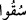

Fethürrahman’da şöyle denilmiştir: “Mağfiret” kelimesi, mahzuf olan “sınıf”
kelimesine mâtuftur. Yâni onlara orada mağfiretin sebep ve vesile olduğu nice nimetler
vardır. Yoksa mağfiret, cennete girmeden öncedir.
Kevâşi’de şöyle denilmiştir: Mağfiret kelimesi, mukadder “esnâf: sınıflar” kelimesine
matuftur. Şunu bildirmiş oluyor ki Allah, verdiği bu nimetlerle birlikte ayrıca onlardan
hoşnut ve râzıdır. Zira efendi kölesine kızmasına rağmen yine ona nimetler verebilir.
Bazı ârifler şöyle demiştir: Semerât, mükâşefeden ibaret olup mağfiret de varlık
günahının affedilmesidir.
Şöyle denilmiştir: Senin varlığın (Allah’ın varlığı yanında kendinde varlık görmen)
hiçbir günahla kıyas edilmeyecek kadar büyük günahtır.
Şu beyt ne kadar güzeldir:
Bizim var olduğumuz zannı büyük günahtır,
Allahım! Bir lütfeyle ve bizi bu günahtan geçir (kurtar).
“Ateşte ebedî kalan ve bağırsaklarını parça parça kesen sıcak suyun içirildiği
kimseler gibi olur mu?” Bu ifâde mahzuf bir mübtedânın haberidir. Takdîri şöyledir:
Söz verildiği şekilde cereyan edip gerçekleşen bu cennette ebedî kalanla hiç alevi
sönmeyen, esiri kurtulmayan, garibinin hiç ünsiyet peyda edemediği ateşte ebedî kalan
bir midir? Böyle bir nimet içinde olan, hiç ebedî cehennem ateşindeki kimse gibi olur
mu? Allah Teâlâ’nın “sonunda yerleri ateştir” kavli bunu ifâde etmektedir.
Âyette
(sükuu) fiilinin çoğul olması, “men” edâtının mânâsı itibarıyladır. Yâni
cennet ehlinin bu leziz yiyeceklerine karşılık cehennemliklere son derece sıcak ve
içenin bağırsaklarını paramparça eden kaynar su içirilecek. Sonra su, sıcaklığının
fazlalığından onların bağırsaklarını parça parça edecek.
(em’â) kelimesi
(mi’an) kelimesinin çoğuludur. Karında oniki parmak
bağırsaklarındandır. Yâni mideden sonra yemeğin intikal ettiği bağırsaklardandır.
Denildi ki: Bu sıcak su onlara yaklaştırıldığı zaman yüzleri pişer, kebap olur. Başlarının
derisi soyulur. Bu sıcak suyu içtikleri zaman bağırsaklarını paramparça eder.
Bağırsakları mak’adlarından dışarı çıkar.
Ey Kahhar olan Allah’tan gafil olan insan! Bütün bunlara ibret nazarıyla bak ve
düşün. Tatlı ve soğuk içeceklerle kaynar ve acı su hiç bir olur mu? Cehennem ehlinin
kalpleri ilimlerden ve ilâhî mârifetlerden boş, gaflet ve cehaletle dolu olduğu için Allah
bu insanları cehennem belâsıyla belâlandırmıştır. Şüphesiz uhrevî suretlerde gelecek
lezzetler, ancak dünyevî ve mânevî lezzetlerden kaynaklanmaktadır. Nitekim Malik b.
Dinar (k.s.), “İnsanlar, dünyada en güzel şeyin lezzetini tatmadan dünyadan çıkıp âhirete
gidiyorlar” deyince, “o nedir diye sorulmuş”, Malik b. Dinar da “Allah Teâlâ’nın
mârifetidir” demiştir. İşte insanların dünyada elde ettikleri mârifetullah zevki miktarınca
âhirette de cemâlullah zevki hâsıl olur. Kimin de bu mârifetullah zevki tam ve kâmil
olursa, cennet nimetleri ve cemâlullah zevki de o nisbette tam ve kâmil olur.